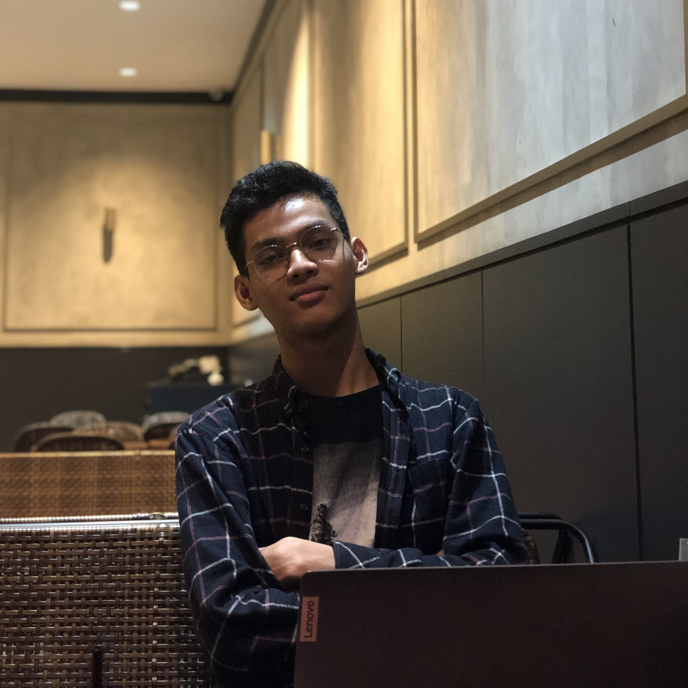

Hello there! I'm Abyan, an enthusiastic and ambitious undergraduate student with a passion for computer science. Aspiring to become a skilled full-stack developer, I thrive on crafting innovative solutions that merge cutting-edge technologies with elegant design. With a keen eye for detail and a drive to continuously learn and grow, I'm committed to creating seamless user experiences and solving real-world problems through my work. Join me on this exciting journey as I explore the vast realms of web development and software engineering!
Greetings! My name is Abyan Fidriyansyah, and I came into this world on 14th May 2004 in the bustling city of Jakarta. Currently, I'm wholeheartedly immersed in the world of academia as an undergraduate student pursuing a degree in computer science at IPB University. From a young age, I discovered my passion for software development, and I have been on an exhilarating journey to refine my skills ever since. Alongside the excitement of coding, I find solace and creativity in strumming melodies on my guitar and seeking thrilling adventures in the virtual realm of gaming during my leisure hours.
In my pursuit of knowledge, I have embarked on the exciting journey of web development, immersing myself in the foundational elements of HTML, CSS, and JavaScript, where I am steadily building my expertise. The ever-evolving tech landscape never ceases to amaze me, and I relish the challenges that arise when mastering cutting-edge technologies. Each coding endeavor fuels my desire to create seamless user experiences and push the boundaries of what is possible.
As my journey continues, I hold steadfast to the dream of becoming a professional full-stack developer. This aspiration is fueled not only by my love for programming but also by my unwavering dedication to solving real-world problems through my work. I yearn to craft innovative solutions that seamlessly merge cutting-edge technologies with elegant design. My commitment to continuous learning and growth keeps me on a quest for knowledge, as I strive to stay ahead in an ever-evolving industry.
I cherish the moments of inspiration that strike like lightning, propelling me towards the creation of transformative applications and systems. My heart flutters with excitement at the prospect of contributing to the greater tech community and using my skills to positively impact people's lives. With unwavering determination and a vision for excellence, I am resolute in my pursuit of becoming a force to be reckoned with in the world of software development.